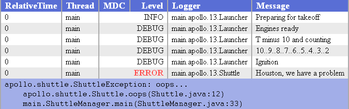
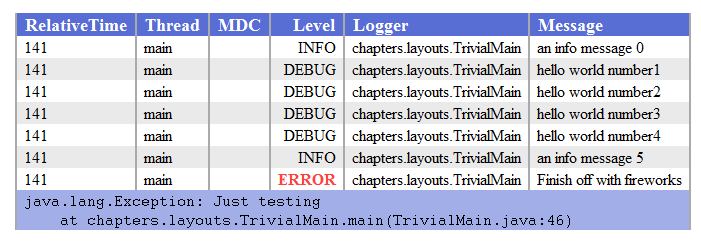
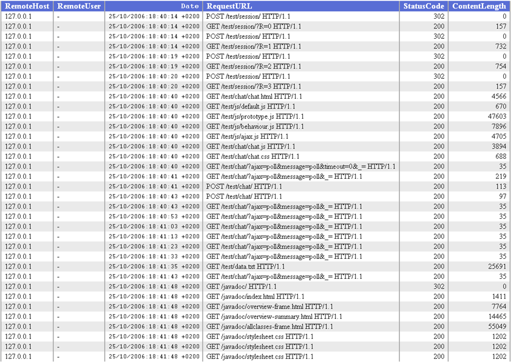

什么是 layout？
layout 是 logback 的组件，负责将日志事件转换为字符串。Layout 接口中的 format() 方法接受一个表示日志事件的对象 （任何类型）并返回一个字符串。Layout 接口的概要如下：
1 | public interface Layout<E> extends ContextAware, LifeCycle { |
这个接口相对简单，但是它可以满足大部分的格式化需求。
Logback-classic
logback-classic 仅仅用来处理 ch.qos.logback.classic.spi.ILoggingEvent 类型的日志事件。我们将在这个部分说明这个事实。
定制 Layout
让我们为 logback-classic 模块实现一个简单但是实用的功能，打印应用启动所耗费的时间，日志事件的级别，被综括号包裹的调用者线程，logger 名，破折号后面跟日志信息，以及新起一行。
类似下面的输出：
1 | 10489 DEBUG [main] com.marsupial.Pouch - Hello world. |
下面是一种可能的实现：
Example: MySampleLayout.java
1 | package chapters.layouts; |
MySampleLayout 继承自 LayoutBase。这个类管理所有 layout 实例的状态信息，例如：layout 是否启动或者停止，头部，尾部以及内容类型数据。它让开发者通过自己 Layout 集中在日志具体的格式化上。LayoutBase 类是通用的。在它的类声明上，MySampleLayout 继承 LayoutBase<ILoggingEvent>。
在上面这个例子中，doLayout 方法忽略了日志事件中任何可能的异常。在实际应用中，你可能需要打印异常信息。
配置自定义的 layout
配置自定义的 layout 跟其它的组件一样的配置。根据之前提到的，FileAppender 及其子类期望一个 encoder。为了去满足这个需求，我们将一个包裹了我们自己定义的 MySampleLayout 的 LayoutWrappingEncoder 的实例传递给 FileAppender。下面是配置示例：
Example: sampleLayoutConfig.xml
1 | <configuration> |
chapters.layouts.SampleLogging 这个简单的应用通过第一个参数接收配置文件，然后打印了一个 debug 信息，接着打印了 error 信息。
在 logback-examples 文件夹下通过以下命令来运行：
1 | java chapters.layouts.SampleLogging src/main/java/chapters/layouts/sampleLayoutConfig.xml |
将会输出：
1 | 0 DEBUG [main] chapters.layouts.SampleLogging - Everything's going well |
这种足够简单。读者应该会发现，在 MySampleLayout2.java 中，我们自定义的 layout 做了一点点的修改。正如本手册一直提到的，为 layout 或者其它 logback 的组件添加一个属性，跟为这个属性添加一个 set 方法一样简单。
MySampleLayout2 类包含了两个属性。第一个是可以将一个前缀添加到输出的日志中。第二个属性可以用来选择是否展示发送日志请求的线程名。
下面是 MySampleLayout2 类：
1 | package chapters.layouts; |
添加相应的 set 方法就可以开启属性的配置。PrintThreadName 属性是 boolean 而不是 String 类型。关于配置 logback 的详细信息请参见 [Logback] 3 Logback 的配置。Chapter 11: Joran 将会提供更详细的内容。下面是关于 MySampleLayout2 的相关配置：
1 | <configuration> |
PatternLayout
logback 配备了一个更加灵活的 layout 叫做 PatternLayout。跟所有的 layout 一样，PatternLayout 接收一个日志事件并返回一个字符串。但是，可以通过调整 PatternLayout 的转换模式来进行定制。
PatternLayout 中的转换模式与 C 语言中 printf() 方法中的转换模式密切相关。转换模式由字面量与格式控制表达式也叫转换说明符组成。你可以在转换模式中自由的插入字面量。每一个转换说明符由一个百分号开始 ‘%’，后面跟随可选的格式修改器，以及用综括号括起来的转换字符与可选的参数。转换字符需要转换的字段。如：logger 的名字，日志级别，日期以及线程名。格式修改器控制字段的宽度，间距以及左右对齐。
正如我们已经在其它地方提到过的，FileAppender 及其子类需要一个 encoder。因为，当将 FileAppender 及其子类与 PatternLayout 结合使用时，PatternLayout 必须用 encoder 包裹起来。鉴于 FileAppender/PatternLayout 结合使用很常见，因此 logback 单独设计了一个名叫 PatternLayoutEncoder 的 encoder，包裹了一个 PatternLayout，因此它可以被当作一个 encoder。下面是通过代码配置 ConsoleAppender 与 PatternLayoutEncoder 使用的例子：
Example: PatternSample.java
1 | package chapters.layouts; |
在上面这个例子中，转换模式被设置为 “%-5level [%thread]: %message%n “，关于 logback 中简短的转换字符将会很快给出。运行 PatternSample：
1 | java java chapters.layouts.PatternSample |
将会输出如下信息：
1 | DEBUG [main]: Message 1 |
在转换模式 “%-5level [%thread]: %message%n” 中，字面量与转换说明符之间没有明显的分隔符。当对转换模式进行解析的时候，PatternLayout 有能力对字面量 (空格符，方括号，冒号) 和 转换说明符进行区分。在上面的例子中，转换说明符 %-5level 表示日志事件的级别的字符应该向左对齐，保持五个字符的宽度。具体的转换格式将会在下面介绍。
在 PatternLayout 中，括号用于对转换模式进行分组。**’(‘ 与 ‘)’ 有特殊的含义，因此如果想用作字面量，需要进行特殊的转义**。圆括号的特殊含义将在 下面 进行详细的介绍。
之前提到过，特定的转换模式可以通过花括号指定可选的参数。一个简单的可选转换模式可以是 %logger{10}。在这里 “logger” 就是转换字符，10 就是可选参数。可选参将在 下面 详细介绍。
转换字符与它们的可选参数在下面的表格中进行详细叙述。当多个转换字符在同一个单元格中被列出来，它们被当作别名来考虑。
| 转换字符 | 效果 | ||||||||||||||||||||||||
|---|---|---|---|---|---|---|---|---|---|---|---|---|---|---|---|---|---|---|---|---|---|---|---|---|---|
| c{length} lo{length} logger{length} |
输出 logger 的名字作为日志事件的来源。转换字符接收一个作为它的第一个也是为一个参数。转换器的简写算法将会缩短 logger 的名字，但是通过不会丢失重要的信息。设置 length 的值为 0 是一个例外。它将会导致转换字符返回 logger 名字中最右边的点右边的字符。下面的表格提供了一个示例：
|
||||||||||||||||||||||||
| C{length} class{length} |
输出发出日志请求的类的全限定名称。 跟 %logger% 转换符一样，它也可以接收一个整型的可选参数去缩短类名。0 表示特殊含义，在打印类名时将不会输出包的前缀名。默认表示打印类的全限定名。 生成调用者类的信息并不是特别快。因此，应该避免使用，除非执行速度不是问题。 |
||||||||||||||||||||||||
| contextName cn |
输出日志事件附加到的 logger 上下文的名字。 | ||||||||||||||||||||||||
| d{pattern} date{pattern} d{pattern, timezone} date{pattern, timezone} | 用于输出日志事件的日期。日期转换符允许接收一个字符串作为参数。字符串的语法与 SimpleDateFormat 中的格式完全兼容。 你可以指定 “ISO8601” 来表示将日期格式为 ISO8601 类型。如果没有指定日期格式，那么 %date 转换字符默认为 ISO860 类型。 这里有一个例子。它假设当前时间为 2006.10.20 星期五，作者刚刚吃完饭准备写这篇文档。
第二个参数用于指定时区。例如， ‘%date{HH:mm:ss.SSS, Australia/Perth}’ 将会打印世界上最孤立的城市，澳大利亚佩斯所在时区的日期。如果没有指定时区参数，则默认使用 Java 平台所在主机的时区。如果指定的时区不能识别或者拼写错误，则 TimeZone.getTimeZone(String) 方法会指定时区为 GMT。 常见错误： 对于 HH:mm:ss,SSS 模式，逗号会被解析为分隔符，所以最终会被解析为 HH:mm:ss，SSS 会被当作时区。如果你想在日期模式中使用逗号，那么你可以这样使用，%date{“HH:mm:ss,SSS“} 用双引号将日期模式包裹起来。 |
||||||||||||||||||||||||
| F / file | 输出发出日志请求的 Java 源文件名。 由于生成文件的信息不是特别快，因此，应该避免使用，除非速度不是问题。 |
||||||||||||||||||||||||
| caller{depth} caller{depthStart..depthEnd} caller{depth, evaluator-1, … evaluator-n} caller{depthStart..depthEnd, evaluator-1, … evaluator-n} |
输出生成日志的调用者所在的位置信息。 位置信息依赖 JVM 的实现，但是通常由调用方法的全限定名以及调用者的来源组成。以及由圆括号括起来的文件名与行号。 caller 转换符还可以接收一个整形的参数，用来配置展示信息的深度。 例如，**%caller{2}** 会展示如下的信息： 0 [main] DEBUG - logging statement%caller{3} 会展示如下信息： 16 [main] DEBUG - logging statement caller 转换符还可以接收一个范围用来展示深度在这个范围内的信息。 例如，**%caller{1..2}** 会展示如下信息： [main] DEBUG - logging statement 转换字符还可以接收一个 evaluator，在计算调用者数据之前通过指定的标准对日志事件进行测验。例如，**%caller{3, CALLER_DISPLAY_EVAL}** 会在 CALLER_DISPLAY_EVAL 返回一个肯定的答案，才会显示三行堆栈信息。 将在下面详细叙述 evaluator。 |
||||||||||||||||||||||||
| L / line | 输出发出日志请求所在的行号。 生成行号不是特别快。因此，不建议使用，除非生成速度不是问题。 |
||||||||||||||||||||||||
| m / msg / message | 输出与日志事件相关联的，由应用程序提供的日志信息。 | ||||||||||||||||||||||||
| M / method | 输出发出日志请求的方法名。 生成方法名不是特别快，因此，应该避免使用，除非生成速度不是问题。 |
||||||||||||||||||||||||
| n | 输出平台所依赖的行分割字符。 转换字符提供了像 “\n” 或 “\r\n” 一样的转换效果。因此指定行分隔符它是首选的指定方式。 |
||||||||||||||||||||||||
| p / le / level | 输出日志事件的级别。 | ||||||||||||||||||||||||
| r / relative | 输出应用程序启动到创建日志事件所花费的毫秒数 | ||||||||||||||||||||||||
| t / thread | 输出生成日志事件的线程名。 | ||||||||||||||||||||||||
| ex{depth} exception{depth} throwable{depth} ex{depth, evaluator-1, …, evaluator-n} exception{depth, evaluator-1, …, evaluator-n} throwable{depth, evaluator-1, …, evaluator-n} | 输出日志事件相关的堆栈信息，默认情况下会输出全部的堆栈信息。 throwable 转换词可以接收如下的参数：
在输出前，转换字符还可以使用给定的标准再次检验日志事件。例如，使用 %ex{full, EX_DISPLAY_EVAL} ，只有 EX_DISPLAY_EVAL 返回一个否定的答案，才会输出全部的堆栈信息。evaluator 在接下来的文档中将会进一步叙述。如果你没有指定 %throwable 或者其它跟 throwable 相关的转换字符，那么 PatternLayout 会在最后一个转换字符加上这个。因为堆栈信息非常的重要。如果你不想展示堆栈信息，那么可以使用 %nopex (作者原文为 $nopex) 可以替代 %throwable。详情见 %nopex。 |
||||||||||||||||||||||||
| xEx{depth} xException{depth} xThrowable{depth} xEx{depth, evaluator-1, …, evaluator-n} xException{depth, evaluator-1, …, evaluator-n} xThrowable{depth, evaluator-1, …, evaluator-n} |
跟 %throwable 类似，只不过多了类的包信息。 在每个堆栈信息的末尾，多了包含 jar 文件的字符串，后面再加上具体的实现版本。这项创造性的技术是来自 James Strachan 的建议。如果该信息不确定，那么类的包信息前面会有一个波浪号（~）。 下面是一个例子： java.lang.NullPointerExceptionlogback 努力的去确保类的包信息正确的展示，即使是在复杂的类加载层次中。但是，一个不能保证信息的绝对正确，那么在这些数据的前面将会多一个波浪符 (~)。因此，从理论上来说，打印的类的包信息跟真实的类的包信息是有区别的。在上面的例子中，类 Wombat 的包信息前面有一个波浪符，在实际的情况中，它真实包可能为 [wombat.jar:1.7]。 但是请注意潜在的性能损耗，计算 包信息默认是禁止的。当启用了计算包信息，那么 PatternLayout 将会自动认为在字符串模式的末尾 %xThrowable 替代了 %throwable。根据用户的 反馈，Netbeans 会阻止包信息的打印。 |
||||||||||||||||||||||||
| nopex nopexception |
这个转换字符不会输出任何数据，因此，它可以用来有效忽略异常信息。 %nopex 转换字符允许用户重写 PatternLayout 内部的安全机制，该机制将会在没有指定其它处理异常的转换字符时，默认添加 %xThrowable。 |
||||||||||||||||||||||||
| marker | 输出与日志请求相关的标签。 一旦标签包含子标签，那么转换器将会根据下面的格式展示父标签与子标签。 parentName [child1, child2] |
||||||||||||||||||||||||
| property{key} | 输出属性 key 所对应的值。相关定义参见 定义变量 以及 作用域。如果 key 在 logger context 中没有找到，那么将会去系统属性中找。 key 没有默认值，如果缺失，则会展示 “ Property_HAS_NO_KEY” 的错误信息。 |
||||||||||||||||||||||||
| replace(p){r, t} | 在子模式 ‘p’ 产生的字符中，将所有出现正则表达式 ‘r’ 的地方替换为 ‘t’。例如，”%replace(%msg){‘\s’, ‘’}” 将会移除事件消息中所有空格。 模式 ‘p’ 可以是任意复杂的甚至由多个转换字符组成。例如，”%replace(%logger %msg){‘.‘, ‘/‘}” 将会替换 logger 以及消息中所有的点为斜杆。 |
||||||||||||||||||||||||
| rEx{depth} rootException{depth} rEx{depth, evaluator-1, …, evaluator-n} rootException{depth, evaluator-1, …, evaluator-n} | 输出与日志事件相关的堆栈信息，根异常将会首先输出，而是标准的”根异常最后输出”。下面是一个输出例子：java.lang.NullPointerException%rootException 跟 %xException 类似，也允许一些可选的参数，包括深度以及 evaluator。它也会输出包信息。简单来说，%rootException 跟 %xException 非常的类似，仅仅是异常输出的顺序完全相反。 %rootException 的作者 Tomasz Nurkiewicz 在他的博客说明了他所作的贡献 “Logging exceptions root cause first”。 |
% 有特殊的含义
在给定的转换模式上下文中，% 有特殊的含义。如果作为字面量，需要进行转义。例如，”%d %p % %m%n”。
转换字符对字面量的限制
在大多数的情况下，字面量包括空格或者其它的分隔符，所以它们不会与转换字符混淆。例如，”%level [%thread] - %message%n” 包含字面量字符 “ [“ 与 “] - “。但是，如果一个转换字符后面紧跟着一个字面量，那么 logback 的模式解析器将会错误的认为这个字面量也是转换字符的一部分。例如，”%date**%nHello**” 将会被解析成两个转换字符 %date 与 %nHello，但是 %nHello 不是一个转换字符，所以 logback 将会输出 %PARSER_ERROR[nHello]。如果你想要区分 %n 跟 Hello，可以通过给 %n 传递一个空参数。例如，”%date**%n{}**Hello” 将会被解析为 %date %n 再紧跟着一个字符串 “Hello”。
格式修改器
默认情况下，相关信息按照原样输出。但是，在格式修改器的帮助下，可以对每个数据字段进行对齐，以及更改最大最小宽度。
可选的格式修改器放在百分号跟转换字符之间。
第一个可选的格式修改器是左对齐标志，也就是减号 (-) 字符。接下来的是最小字段宽度修改器，它是一个十进制常量，表示输出至少多少个字符。如果字段包含很少的数据，它会选择填充左边或者右边，直到满足最小宽度。默认是填充左边 (右对齐)，但是你可以通过左对齐标志来对右边进行填充。填充字符为空格。如果字段的数据大于最小字段的宽度，会自动扩容去容纳所有的数据。字段的数据永远不会被截断。
这个行为可以通过使用最大字段宽度修改器来改变，它通过一个点后面跟着一个十进制常量来指定。如果字段的数据长度大于最大字段的宽度，那么会从数据字段的开头移除多余的字符。举个例子，如果最大字段的宽度是 8，数据长度是十个字符的长度，那么开头的两个字符将会被丢弃。这个行为跟 C 语言中 printf 函数从后面开始截断的行为相违背。
如果想从后面开始截断，可以在点后面增加一个减号。如果是这样的话，最大字段宽度是 8，数据长度是十个字符的长度，那么最后两个字符将会被丢弃。
下面是各种格式修改器的例子：
| 格式修改器 | 左对齐 | 最小宽度 | 最大宽度 | 备注 |
|---|---|---|---|---|
| %20logger | false | 20 | none | 如果 logger 的名字小于 20 个字符的长度，那么会在左边填充空格 |
| %-20logger | true | 20 | none | 如果 logger 的名字小于 20 个字符的长度，那么会在右边填充空格 |
| %.30logger | NA | none | 30 | 如果 logger 的名字大于 30 个字符的长度，那么从前面开始截断 |
| %20.30logger | false | 20 | 30 | 如果 logger 的名字大于 20 个字符的长度，那么会从左边填充空格。但是如果 logger 的名字大于 30 字符，将会从前面开始截断 |
| %-20.30logger | true | 20 | 30 | 如果 logger 的名字小于 20 个字符的长度，那么从右边开始填充空格。但是如果 logger 的名字大于 30 个字符，将会从前面开始截断 |
| %.-30logger | NA | none | 30 | 如果 logger 的名字大于 30 个字符的长度，那么从后面开始截断 |
下面的表格列出了格式修改器截断的例子。但是请注意综括号 “[]” 不是输出结果的一部分，它只是用来区分输出的长度。
| 格式修改器 | logger 的名字 | 结果 |
|---|---|---|
| [%20.20logger] | main.Name | [ main.Name] |
| [%-20.20logger] | main.Name | [main.Name ] |
| [%10.10logger] | main.foo.foo.bar.Name | [o.bar.Name] |
| [%10.-10logger] | main.foo.foo.bar.Name | [main.foo.f] |
只输出日志等级的一个字符
除了可以输出 TRACE, DEBUG, WARN, INFO 或者 ERROR 来表示日志等级之外，还是输出T, D, W, I 与 E 来进行表示。你可以 自定义转换器 或者利用刚才讨论的格式修改器来缩短日志级别为一个字符。这个转换说明符可能为 “%.-1level”。
转换字符的选项
一个转换字符后面可以跟一个选项。它们通过综括号来声明。我们之前已经看到了一些可能的选项。例如之前的 MDC 转换说明符 *%mdc{someKey}*。
一个转换说明符可能有多个可选项。一个转换说明符可以充分利用我们即将介绍到的 evaluator，可以添加多个 evaluator 的名字到可选列表。如下：
1 | <pattern>%-4relative [%thread] %-5level - %msg%n \ |
如果这些选项中包含了一些特殊字符，例如花括号，空格，逗号。你可以使用单引号或者双引号来包裹它们。例如：
1 | <pattern>%-5level - %replace(%msg){'\d{14,16}', 'XXXX'}%n</pattern> |
我们传递 \d{16} 与 XXXX 给 replace 转换字符。它将消息中 14，15 或者 16 位的数字替换为 XXXX，用来混淆信用卡号码。在正则表达式中，”\d” 表示一个数字的简写。”{14,16}“ 会被解析成 “{14,16}”，也就是说前一个项将会被重复至少 14 次，至多 16 次。
特殊的圆括号
在 logback 里，模式字符串中的圆括号被看作为分组标记。因此，它能够对子模式进行分组，并且直接对子模式进行格式化。在 0.9.27 版本，logback 开始支持综合转换字符，例如 %replace 可以对子模式进行转换。
例如一下模式：
1 | %-30(%d{HH:mm:ss.SSS} [%thread]) %-5level %logger{32} - %msg%n |
将会对子模式 “%d{HH:mm:ss.SSS} [%thread]” 进行分组输出，为了在少于 30 个字符时进行右填充。
如果没有进行分组将会输出：
1 | 13:09:30 [main] DEBUG c.q.logback.demo.ContextListener - Classload hashcode is 13995234 |
如果对 “%-30()” 进行分组将会输出：
1 | 13:09:30 [main] DEBUG c.q.logback.demo.ContextListener - Classload hashcode is 13995234 |
后者的格式更加容易阅读。
如果你想将圆括号当作字面量输出，那么你需要对每个圆括号用反斜杠进行转义。就像 (%d{HH:mm:ss.SSS} [%thread]) 一样。
着色
如上所述的 圆括号 分组，允许对子模式进行着色。在 1.0.5 版本，PatternLayout 可以识别 “%black”，”%red”，”%green”，”%yellow”，”%blue”，”%magenta”,”%cyan”, “%white”, “%gray”, “%boldRed”,”%boldGreen”, “%boldYellow”, “%boldBlue”, “%boldMagenta””%boldCyan”, “%boldWhite” 以及 “%highlight” 作为转换字符。这些转换字符都还可以包含一个子模式。任何被颜色转换字符包裹的子模式都会通过指定的颜色输出。
下面是关于着色的配置文件。
1 | <configuration debug="true"> |
下面是相关的输出：
1 | [main] WARN c.l.TrivialMain - a warning message 0 |
其实是有颜色的，但是 md 不支持直接对字体颜色进行操作，而我懒得去折腾 HTML。
只需要几行代码就可以创建一个着色转换字符。在自定义转换说明符部分，我们将讨论怎样在配置文件中注册一个转换字符。
Evaluators
像之前提到的，当一个转换字符需要基于一个或者多个 EventEvaluator 对象动态表现时，EventEvaluator 对象根据规则可以决定给定的日志事件是否匹配。
让我们来回顾一下包含 EventEvaluator 的例子。下一个配置文件输出日志事件到控制台，显示日期，线程，日志级别，消息，以及调用者数据。获取日志事件调用者的信息成本比较高，只有当日志请求来源特定的 logger，或者消息包含特定的字符串时，我们才会这样做。换句话说，在调用者信息是多余的情况下，我们不应该去影响应用的性能。
Evaluator 与 评价表达式 (evaluation expressions) 都会在 [Logback] 7 Filters 详细介绍。如果你想利用 evaluator 去做一些有意思的事情，你必须看一下对这个的详细介绍。下面的例子基于 JaninoEventEvaluator，所以需要 Janino 类库。查看 相关文档 进行设置。
Example: callerEvaluatorConfig.xml
1 | <configuration> |
上面的评价表达式用来匹配从名为 “chapters.layouts” logger 发出，并且消息中包含字符串 “who calls thee” 的日志事件。由于 XML 的编码规则，& 符号需要被转义为 &。
下面的类利用了配置文件中所提到的特性。
Example: CallerEvaluatorExample.java
1 | package chapters.layouts; |
上面的应用没有什么特别的地方。发出五条日志请求，第三条的的请求信息为 “who calls thee?”。
通过命令：
1 | java chapters.layouts.CallerEvaluatorExample src/main/java/chapters/layouts/callerEvaluatorConfig.xml |
将会输出：
1 | 0 [main] DEBUG - I know me 0 |
当发出日志请求时，会评价相应的日志事件。仅仅只有第三个日志事件会匹配到评价规则，所以它的调用者信息会被展示出来。对于其它的日志事件，由于没有匹配到评价规则，调用者信息不会被打印。
可以通过更改表达式来应对真实的应用场景。举个例子，你可以结合 logger 名与日志级别，日志级别在 WARN 以上的日志请求被当作一个敏感的部分，在金融业务模块中，我们可以这样做来获取调用者的信息。
重要： 当 评价表达式 为 true 时，通过 caller 转换字符，可以输出调用者的信息。
考虑这么一种情况，当日志请求中包含异常信息时，它们的堆栈信息也会输出。但是，对于某些特定的异常信息，可能需要禁止输出堆栈信息。
下面的代码创建了三条日志请求，每一条都包含一个异常信息。第二条的异常信息跟其它的不一样，它包含 “do not display this” 字符串，并且它的异常信息类型为 chapters.layouts.TestException。现在让我们来阻止第二条日志的打印。
Example: ExceptionEvaluatorExample.java
1 | package chapters.layouts; |
下面的配置文件通过评价表达式来匹配包含 chapters.layouts.TextException 类型的日志事件，也就是我们之前说要禁止的异常类型。
Example: exceptionEvaluatorConfig.xml
1 | <configuration> |
作者原文里面是 %ex，应该是笔误。
通过这个配置文件，每当日志请求中包含一个 chapters.layouts.TestException 时，堆栈信息不会被输出。
通过如下命令启动：
1 | java chapters.layouts.ExceptionEvaluatorExample src/main/java/chapters/layouts/exceptionEvaluatorConfig.xml |
将会输出：
1 | logging statement 0 |
作者原文还输出了 jar 包的信息，是因为打包后通过命令行执行的 (I think 😂)。
第二条日志没有堆栈信息，因为我们禁止 TextException 类型的堆栈信息。每条堆栈信息的最后用综括号包裹起来的是具体的 包信息。
注意： 当 %ex 转换说明符中的评价表达式为 false 时，堆栈信息才会输出。
自定义转换说明符
我们可以在 PatternLayout 中使用内置的转换字符。我们也可以使用自己新建的转换字符。
新建一个自定义的转换字符需要两步。
第一步
首先，你必须继承 ClassicConverter 类。ClassicConverter 对象负责从 ILoggingEvent 实例中抽取信息并输出字符串。例如，%logger 对应的转换器 LoggerConverter，可以从 ILoggingEvent 从抽取 logger 的名字，返回一个字符串。它可以缩写 logger 的名字。
下面是一个自定义的转换器，返回从创建开始经过的时间，单位为纳秒。
Example: MySampleConverter
1 | public class MySampleConverter extends ClassicConverter { |
这个实现非常简单。MySampleConverter 继承了 ClassicConverter 并实现了 convert 方法，返回从创建开始经过多少纳秒。
第二步
第二步，我们必须让 logback 知道这个新建的 Converter。所以我们需要在配置文件中进行声明，如下：
Example: mySampleConverterConfig.xml
1 | <configuration> |
执行命令如下：
1 | java chapters.layouts.SampleLogging src/main/java/chapters/layouts/mySampleConverterConfig.xml |
输出信息如下：
1 | 26113953 [main] - Everything's going well |
可以看一下其它 Converter 的实现，例如 MDCConverter ，去定制更加复杂的功能，如可选处理。想创建自己的颜色主题，可以看一下 HighlightingCompositeConverter。
HTMLLayout
HTMLLayout (包含在 logback-classic 中) 以 HTML 格式生成日志。HTMLLayout 通过 HTML 表格输出日志，每一行对应一条日志事件。
下面是 HTMLLayout 通过默认的 CSS 样式生成的。

表格的列是通过转换模式指定的。关于转换模式的文档请查看 PatternLayout。所以，你可以完全控制表格的内容以及格式。你可以选择并且展示任何跟 PatternLayout 组合的转换器。
一个值得注意的问题是使用 PatternLayout 中的 HTMLLayout 时，不要使用空格或者其它的字面量来分隔转换说明符。转换模式中的每个说明符都会被当做一个单独的列。同样的转换模式中的每个文本块也会被当作一个单独的列，这会占用屏幕的空间。
下面的 HTMLLayout 相关的配置：
Example: htmlLayoutConfig1.xml
1 | <configuration debug="true"> |
TrivialMain 包含一些消息以及一个结束异常。执行以下命令：
1 | java chapters.layouts.TrivialMain src/main/java/chapters/layouts/htmlLayoutConfig1.xml |
将会当前文件夹创建一个 test.html 文件。test.html 文件的内容与下面类似：

堆栈信息
如果你使用 %ex 转换字符去展示堆栈信息，那么将会创建一个列来展示堆栈信息。在大多数的情况下，列会为空，那么就会浪费屏幕的空间。而且，在单独的列打印堆栈信息，输出的结果阅读起来有难度。但是，*%ex* 转换字符不是唯一一个用来展示堆栈信息的。
原文第一个 %ex 为 %em
一个更好的解决办法是通过实现 IThrowableRenderer 接口。实现的接口可以分配给 HTMLLayout 来管理相关的异常数据。默认情况下，会给每个 HTMLLayout 实例分配一个 DefaultThrowableRenderer。它将异常的堆栈信息写入到表格新的一行，并且非常易读，就跟上面展示的表格一样。
如果在某些情况下，你仍然想要使用 %ex，那么你可以在配置文件中指定 NOPThrowableRenderer 来禁止在单独一行展示堆栈信息。我们不理解为什么你要这样做，但是你开心就好。
CSS
HTMLLayout 创建的 HTML 是通过 CSS 来控制样式的。在缺少指定命令的情况下，HTMLLayout 会使用内部默认的样式。但是，你可以告诉 HTMLLayout 去使用外部的 CSS 文件。通过在 <layout> 元素内置 <cssBuilder> 元素可以做到。如下所示：
1 | <layout class="ch.qos.logback.classic.html.HTMLLayout"> |
HTMLLayout 通常与 SMTPAppender 配合使用，所以邮件可以被格式化成 HTML。
Log4j XMLLayout
XMLLayout (logback-classic 的一部分) 生成一个 log4j.dtd 格式的文件，用来与类似 Chainsaw 以及 Vigilog 这样的工具进行交互操作，这些工具可以处理由 log4j XMLLayout 生成的文件。
跟 log4j 1.2.15 版本的 XMLLayout 一样，logback-classic 中的 XMLLayout 接收两个 boolean 属性：locationInfo 与 properties。设置 locationInfo 的值为 true，可以在每个事件中开启包含位置信息 (调用者的数据)。设置 properties 为 true，可以开启包含 MDC 信息。默认情况下，两个属性都设置为 false。
下面是一个示例：
Example: log4jXMLLayout.xml
1 | <configuration> |
Logback access
大多数 logback-access 的 layout 仅仅只是 logback-classic 的 layout 的改编。logback-classic 与 logback-access 模块定位不同的需求，但是都提供了类似的功能。
写你自己的 layout
在 logback-access 中写一个定制的 Layout 与在 logback-classic 的 Layout 中几乎一致。
PatternLayout
配置 logback-access 中的 PatternLayout，与在 logback-classic 中配置相同。但是它添加了一些额外的转换说明符来适应 HTTP 请求以及 HTTP 响应中特定信息位的记录。
下表是 logback-access 中 PatternLayout 的相关转换说明符。
| 转换字符 | 效果 |
|---|---|
| a / remoteIP | 远程 IP 地址 |
| A / localIP | 本地 IP 地址 |
| b / B / bytesSent | 响应内容的长度 |
| h / clientHost | 远程 host |
| H / protocol | 请求协议 |
| l | 远程日志名，在 logback-access 中，转换器总是返回 “-“ |
| reqParameter{paramName} | 响应参数。 这个转换字符在花括号中接受一个参数，在请求中寻找相应的参数。 %reqParameter{input_data} 展示相应的参数。 |
| i{header} / header{header} | 请求头。 %header{Referer} 显示请求的来源。 如果没有指定选项，将会展示所有可用的请求头 |
| m / requestMethod | 请求方法 |
| r / requestURL | 请求 URL |
| s / statusCode | 请求状态码 |
| D / elapsedTime | 请求所耗费的时间，单位为毫秒 |
| T / elapsedSeconds | 请求所耗费的时间，单位为秒 |
| t / date | 输出日志事件的日期。日期说明符需要用花括号指定。日期格式来源 java.text.SimpleDateFormat。ISO8601 也是一个有效的值。例如，**%t{HH:mm:ss,SSS}** 或者 **%t{dd MMM yyyy ;HH:mm:ss,SSS}**。如果没有指定日期格式字符，那么会默认指定为 %t{dd/MMM/yyyy:HH:mm:ss Z} |
| u / user | 远程用户 |
| q / queryString | 请求查询字符串，前缀为 ‘?’ |
| U / requestURI | 请求 URI |
| S / sessionID | Session ID. |
| v / server | 服务器名 |
| I / threadName | 处理该条请求的线程 |
| localPort | 本地端口 |
| reqAttribute{attributeName} | 请求的属性。 %reqAttribute{SOME_ATTRIBUTE} 展示相应的属性。 |
| reqCookie{cookie} | 请求 cookie。 %cookie{COOKIE_NAME} 展示相应的 cookie。 |
| responseHeader{header} | 响应头。 %header{Referer} 展示响应的来源。 |
| requestContent | 展示请求的内容，即请求的 InputStream。它与 TeeFilter 结合使用。一个使用 TeeHttpServletRequest 替代 HttpServletRequest 的 javax.servlet.Filter。前者可以多次访问请求的 InputStream 而不会丢失内容。 |
| fullRequest | 请求的数据。包括所有的请求头以及请求内容。 |
| responseContent | 展示响应的内容，也就是响应的 InputStream。 它与 TeeFilter 结合使用。一个使用 TeeHttpServletResponse 替代 HttpServletResponse 的 javax.servlet.Filter。前者可以多次访问响应 (原文为请求) 的 InputStream 而不会丢失内容。 |
| fullResponse | 获取响应所有可用的数据，包括所有的响应头以及响应内容。 |
logback-access 的 PatternLayout 能够识别三个关键字，有点类似快捷键。
| 关键字 | 相等的转换模式 |
|---|---|
| common or CLF | %h %l %u [%t] “%r” %s %b |
| combined | %h %l %u [%t] “%r” %s %b “%i{Referer}” “%i{User-Agent}” |
关键字 common 对应 *’%h %l %u [%t] “%r” %s %b’*，分别展示客户端主机，远程日志名，用户，日期，请求 URL，状态码，以及响应内容的长度。
关键字 combined 对应 ‘%h %l %u [%t] “%r” %s %b “%i{Referer}” “%i{User-Agent}”‘ 。跟 common 有点类似，但是它还会再显示两个请求头，referer 以及 user-agent。
HTMLLayout
logback-access 中的 HTMLLayout 与 logback-classic 中的 HTMLLayout 有点类似。
默认情况下，它会创建一个包含如下数据的表格：
- 请求 IP (Remote IP)
- 日期 (Date)
- 请求 URL (Request URL)
- 状态码 (Status code)
- 内容长度 (Content Length)
下面是 logback-access 中的 HTMLLayout 输出的一个例子：

还有比真实的例子更好的例子吗？我们自己的 log4j.properties 用于 logback 翻译器，充分的利用了 logback-access 在线演示 RollingFileAppender 与 HTMLLayout 的输出。
每一个新的用户请求 翻译器 这个网站，一个新的条目就会添加到访问日志，你可以通过 这个链接 查看。
If you like this blog or find it useful for you, you are welcome to comment on it. You are also welcome to share this blog, so that more people can participate in it. If the images used in the blog infringe your copyright, please contact the author to delete them. Thank you !